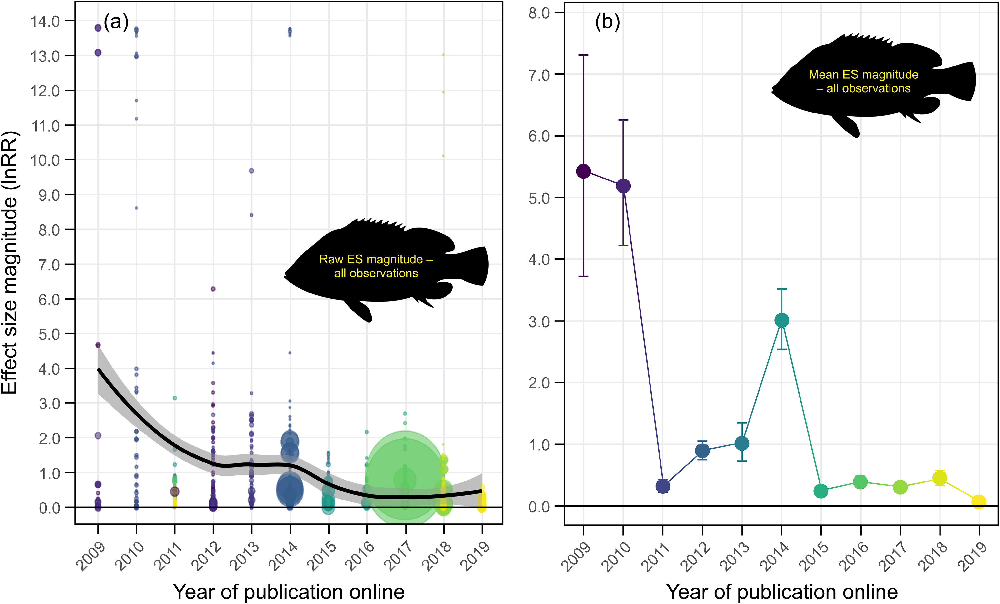

Reproducible research
Bio302 - Methods for reproducible and open science
Richard J. Telford
Department of Biological Sciences, University of Bergen
March 2025
Course Contents
From data to paper:
Reproducible data analysis
Statistics
Assumptions of Least Squares Regression
The relationship between the response and the predictors is ~linear.
The residuals have a mean of zero.
The residuals have constant variance (not heteroscedastic).
The residuals are independent (uncorrelated).
The residuals are normally distributed.
How to identify when these assumptions are violated.
What to do when these assumptions are violated.
Statistics
Exploratory data analysis
Linear regression
Analysis of variance with contrast matrices
Generalised least-squares
Non-linear least-squares
Generalised linear models
Generalised additive models
Mixed effect models
Introduction to Bayesian analysis
Reproducible data analysis
Why is reproducible data analysis important?
Is your current data analysis reproducible?
Terminology
Variety of terms in use
Reproducible - can get same result with same data
Replicable - can get same result if experiment repeated
Conceptual replication - get the same result with a similar experiment
Often used differently
Reproducibility Crisis
Estimating the reproducibility of psychological science Science
Ocean Acidification and Fish Behaviour
Meta-analysis reveals an extreme “decline effect” in the impacts of ocean acidification on fish behavior Clements et al 2022 PLOS Biology
Causes on non-reproducibility
Bad luck
False Discovery
Code errors
Questionable research practices
HARKING
p-Hacking / Researcher degrees of freedom
Publication bias
Selective reporting
Misconduct
Fabrication, Falsification
P-values
Often misinterpreted
Not a measure of effect size or practical significance
Not the probability that hypothesis is true
Strongly affected by sample size
If there were actually no effect (if the true difference between means were zero) then the probability of observing a value for the difference equal to, or greater than, that actually observed would be p=0.05.
Many assumptions
False discovery rate
Questionable research practices
Fraser H et al (2018) Questionable research practices in ecology and evolution. PLoS ONE
P-hacking
Try P-hacking economic data
Predictors - US politicians
Response - Economic performance indicators
Other options
Find a significant positive and negative relationships between one party and the economy
Garden of forking paths
Researcher degrees of freedom
Many decisions to be made
Can be difficult to predict in advance
Gelman and Loken 2013
Publication bias
Can be more difficult to publish “negative” results
Explore publication bias with a shiny app.
install biostats.tutorials package with remotes::install_github("biostats-r/biostats.tutorials")
load biostats.tutorials package with library()
run publication_bias_app()
App simulates the effect of publication bias on the literature if only “significant” studies are published.
Find conditions that cause large publication biases.
Misconduct?
Schiermeier (2017) Investigation finds Swedish scientists committed scientific misconduct. Nature
Enserink (2021) Does ocean acidification alter fish behavior? Fraud allegations create a sea of doubt. Science
Viglione (2020) ‘Avalanche’ of spider-paper retractions shakes behavioural-ecology community Nature
Solutions
Pre-registration
Reproducible workflows
Data management plans
Archiving data and code
Registered reports
Write introduction and methods
Peer review
Accept in principle
Do experiments
Write rest of paper
Second peer review
Deviations from the accepted plan can be made but need to be noted.
Gya et al. 2023 Registered Reports: A new chapter at Ecology & Evolution
Reproducible workflows
VIDEO
https://laskowskilab.faculty.ucdavis.edu/2020/08/03/keeping-a-paper-trail-data-management-skills-for-reproducible-science/
Data archiving
Make data available to others.
Code archiving
“Starting January 1, 2022, The American Naturalist will require that any analysis and simulation code (R scripts, Matlab scripts, Mathematica notebooks) used to generate reported results be archived in a public repository”
American Naturalist
General Reading
Gillespie, C and Lovelace, R (2016) Efficient R programming. https://csgillespie.github.io/efficientR/
Crawley, MJ (2012) The R Book. Wiley.
Wickham, H. and Garrett Grolemund, G. (2017) R for Data Science https://r4ds.had.co.nz/
Zuur AF et al (2009) Mixed effects models and extensions in ecology with R. Springer.